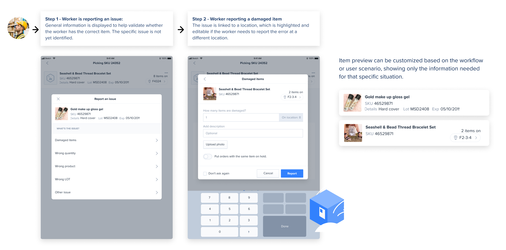
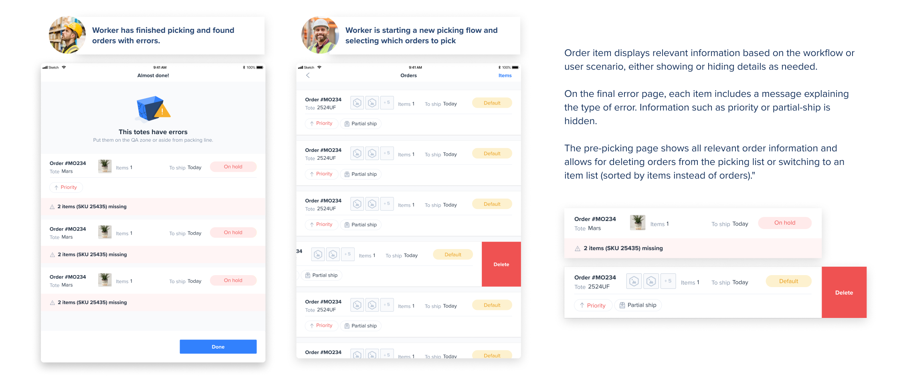

<div id="shipheroModal" class="modal">
  <div class="modal-content">
    <div class="modal-action-bar"><span class="close">&times;</span></div>
    
    <div class="title">
        <h1><span class="highlight">Shiphero:</span>Enhancing Efficiency in Warehouse Operations</h1>
        <p>NYC 2020</p>
    </div>
    <h2>The Goal</h2>
    <p>The biggest challenge in this project was to find a flexible flow that would consistently support all the existing picking flows within a warehouse, in addition to solving multiple needs, such as:</p>
    <ul>
        <li>Using the scanner is more reliable and effective but, at the same time, exceptions are needed. The scan must be the user's primary path, but administrators must be able to set special permissions.</li>
        <li>Avoid blocking the entire flow due to an order that cannot be completed. If an order needs to be left aside, do not delay other orders.</li>
        <li>Avoid blocking the user process due to errors such as empty locations or missing or broken elements.Improve learning curve and efficiency. Users need to use various flows and learn how to use them quickly.</li>
    </ul>
    

    <h2>Item's Cards States & Behavior:</h2>
    <p>The item cards were tailored to accommodate various flows and provide the necessary information at each stage of the process. In the following image, you can see the different states of the card as the user progresses through the flow:</p>
    
    

    <h2>Picking Page Topology:</h2>
    <p>The picking page includes a card that guides users through their next steps, whether it's selecting a specific number of items or assigning a tote (containers used to organize orders).</p>
    <p>At the top, users will find details about the item to be picked, including its location and the expected quantity.</p>
    <p>Additionally, users will find other available actions, such as reporting errors if needed. Each action also offers a manual option for situations where a functional scanner is unavailable.</p>
    

    <h2>Picking Page Card States</h2>
    <p>This is how the state of the card changes through the flow:</p>
    

    <h2>Picking Page Examples</h2>
    <p>These are a few examples of possible states of the page and card</p>
    
    

    <h2>Some other pages</h2>
    <p>The initial image depicts the error reporting page, where users encounter a preview of the item along with a list of error types. After selecting the error type, users are prompted to complete a form with necessary information for submission to the manager. Additionally, the system implements adjustments to prevent future errors, such as temporarily reducing the item quantity to prevent wasted time for other workers.</p>
    <p>The second image illustrates situations where totes need to be set aside due to errors, such as lack of stock of an item preventing order completion.</p>
    <p>In the third image, a modal window is displayed for manual tote assignment, along with a page where users can view all pending orders for picking and have the option to delete individual ones.</p>
    
    
    
  </div>
</div>